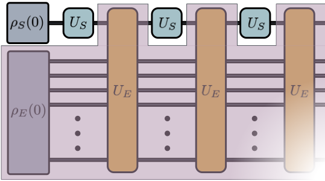
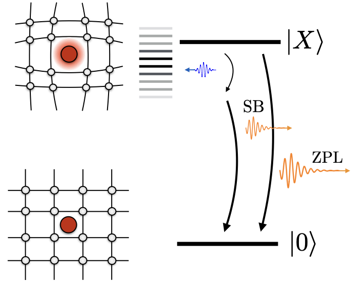
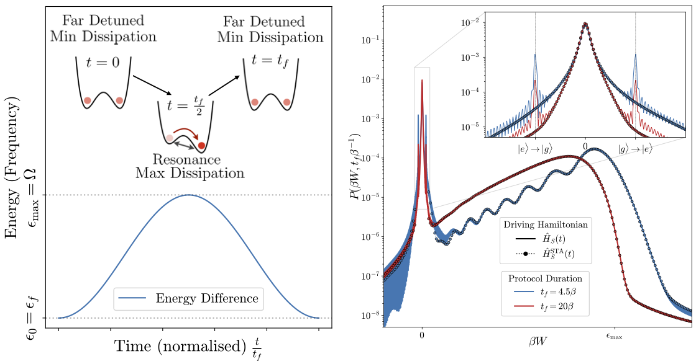
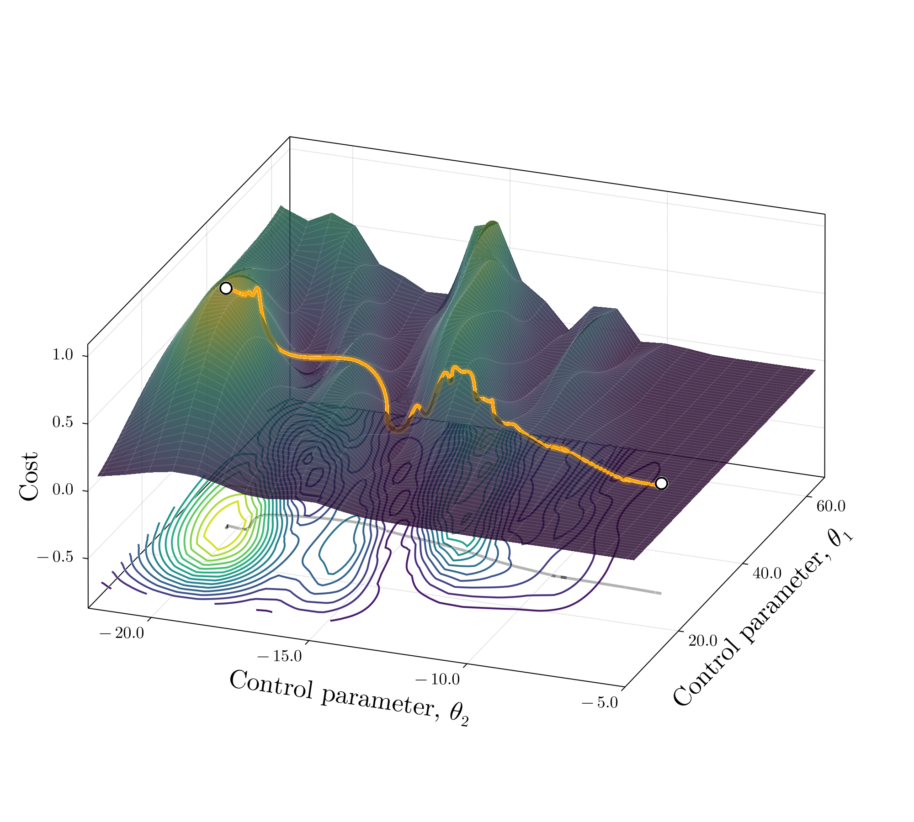

Our research addresses fundamental questions about how quantum systems behave when coupled to their surroundings. We develop new theoretical frameworks and computational tools to describe open quantum dynamics across a range of physical platforms.
Computational and analytical method development
We study memory effects in open quantum systems where the environment retains information about past interactions. Our work develops master equations and process tensor methods that go beyond the Markov approximation to accurately capture structured environments.

Quantum Optics and Photonics
We investigate light-matter interactions in nanophotonic structures, including cavity quantum electrodynamics, waveguide QED, and polariton physics. Our theoretical tools help design and understand quantum optical devices operating in complex electromagnetic environments.

Quantum Thermodynamics
We explore thermodynamic processes at the quantum scale, examining how energy, entropy, and work are defined and constrained in open quantum systems. This includes quantum heat engines, fluctuation theorems, and the thermodynamic cost of quantum information processing.

Optimal Control in non-Markovian regimes
Understanding decoherence is critical for quantum technologies. We model realistic noise processes in quantum computing platforms to inform error mitigation and correction strategies, connecting microscopic environmental models to effective noise channels.
